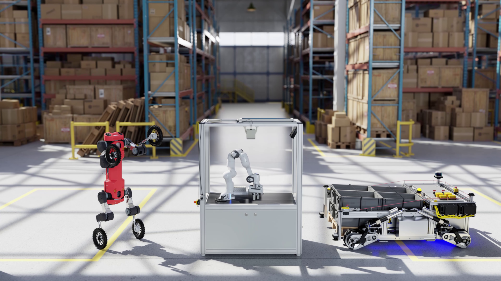
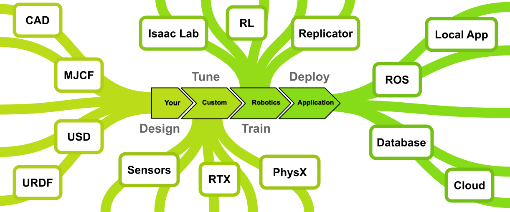
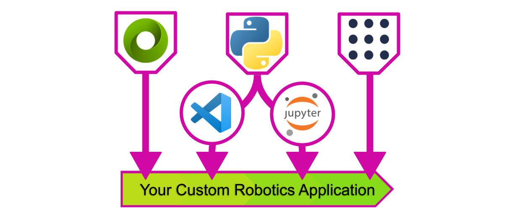

ISAAC SIM
{kind=link}
Note
This document refers to the latest version of Isaac Sim.
Isaac Sim is a software platform built from the ground up to support the increasingly roboticized and automated world. The goal is to make it as easy as possible for you to design, tune, train, and deploy autonomous control agents for real, physical robots.
System Architecture
The purpose of Isaac Sim is to support the creation of new robotics tools and empower the ones that already exist. The platform provides a flexible API for both C++ and Python and can be integrated into a project to varying degrees and depending as needed. The goal of the platform is not to compete with current or existing software, but to collaborate with and enhance it. To this end, many components of Isaac Sim are open source, and freely available for independent use. You may want to design the robot in OnShape, simulate sensors with Isaac Sim, and control the stage through ROS or some other messaging system. Likewise, it is also possible to build a complete, stand alone, application entirely on the platform provided by Isaac Sim!
{kind=link}
Development Workflows
Isaac Sim is built on C++ and Python, and operates most commonly through the use of compiled plugins and bindings respectively. This means the platform is capable of supporting a wide variety of workflows for building and interacting with projects that make use of Isaac Sim. Isaac Sim comes with a full, stand alone, Omniverse application for interacting with and simulating robots, and while this is the most common way users interact with the platform, it is by no means the only method. Isaac Sim also provides direct Python development support in the form of extensions for VS Code and Jupyter Notebooks. Isaac Sim is not limited to synchronous operation either, and can operate with hardware in the loop through ROS and ROS2, facilitating sim-to-real transfer and digital twins.
{kind=link}